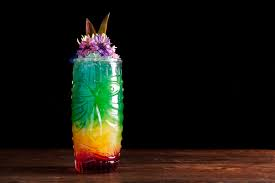

Der Pangalaktische Donnergurgler

Dieses Gebräu könntest du heute noch trinken
Der Pangalaktische Donnergurgler (Pan Galactic Gargle Blaster) ist der angeblich stärkste Drink der Galaxis. Die Wirkung eines Pangalaktischen Donnergurglers ist in etwa so, „als ob man mit einem Goldbarren, der in Zitronenscheiben gehüllt ist, das Gehirn aus dem Kopf gedroschen bekommt“. Er ist das Lieblingsgetränk von Zaphod Beeblebrox, der ihn auch erfunden hat. Es heißt weiterhin: „Trinke niemals mehr als zwei Pangalaktische Donnergurgler. Es sei denn, du bist ein 30-Tonnen-Elefant mit Bronchialasthma.“
Zutaten für einen Cocktail
- Flasche Alten Janx-Geist
- Wasser aus den Meeren von Santraginus V
- 3 Würfel arkturanischen Mega-Gin
- 4 Liter fallianisches Sumpfgas
- 1 Löffel qualaktinischen Hyperminz-Extrakt
- 1 Zahn eines algolianischen Sonnentigers
- 1 Flasche Zamphuor
- 1 Olive
Schritte
- Man nehme den Inhalt einer Flasche Alten Janx-Geist
- Man füge einen Teil Wasser aus den Meeren von Santraginus V hinzu
- Man lasse drei Würfel arkturanischen Mega-Gin in der Mischung zergehen (sie müssen gut gefroren sein, sonst verflüchtigt sich das darin enthaltene Benzin
- Nun lasse man vier Liter fallianisches Sumpfgas hindurchperlen (zur Erinnerung an all die glücklichen Anhalter, die vor Freude in den Sümpfen von Fallia starben)
- Über einen umgedrehten Silberlöffel lasse man nun ein Teil qualaktinischen Hyperminz-Extrakt tröpfeln, der nach allen dunklen, zu Kopf steigenden qualaktinischen Zonen duftet, zart, süß und mystisch
- Man werfe den Zahn eines algolianischen Sonnentigers hinein. Schau zu, wie er sich auflöst und sich die Feuer der algolianischen Sonne tief im Herzen des Drinks verteilen
- Ein Spritzer Zamphuor
- Eine Olive wird als letzte (last but not least!) Zutat für den Pangalaktischen Donnergurgler benötigt